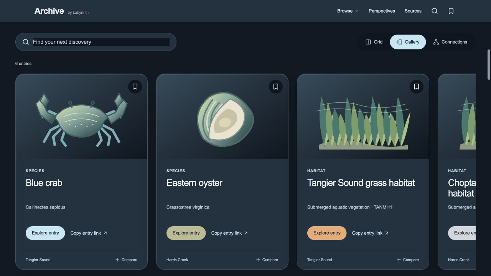
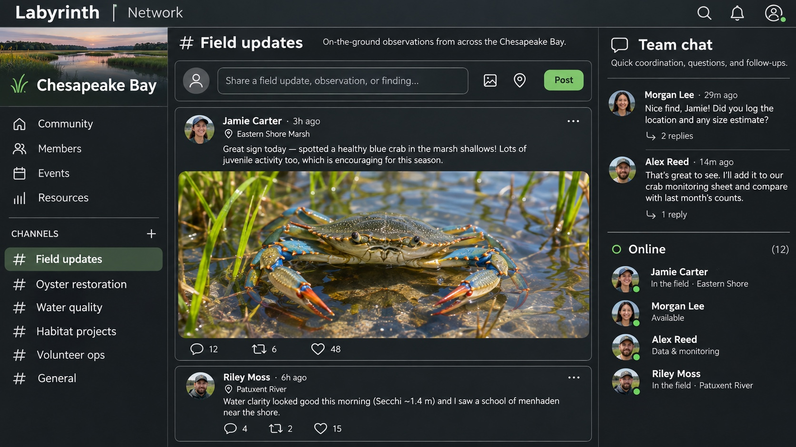
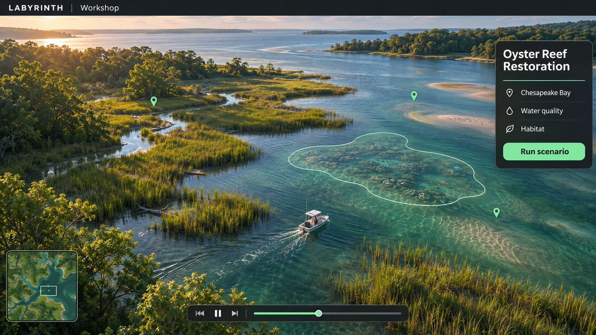
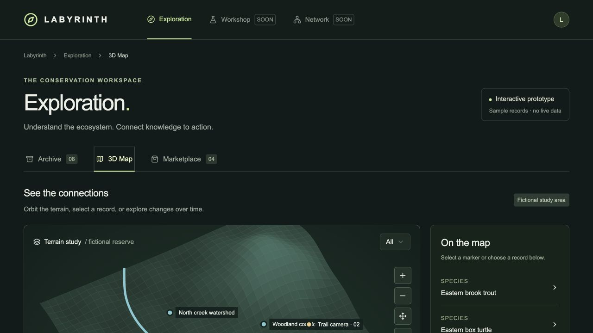
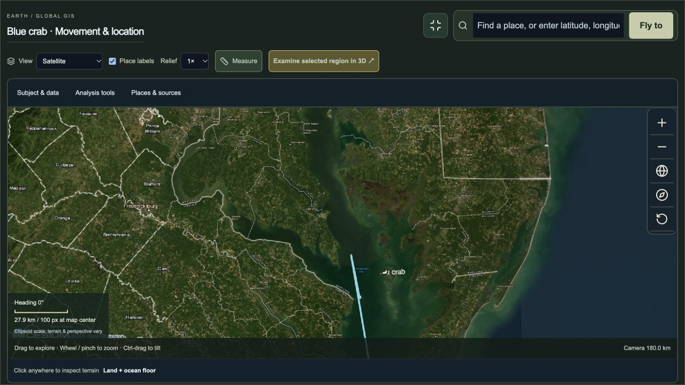
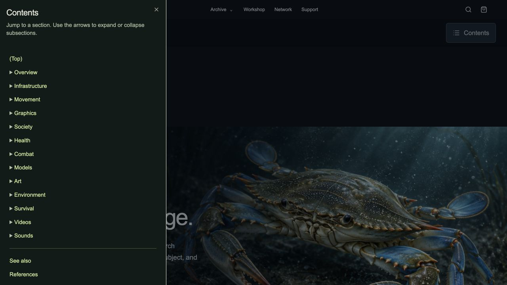
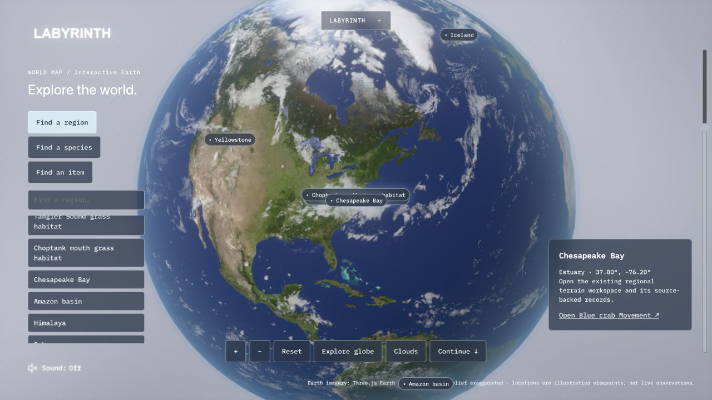
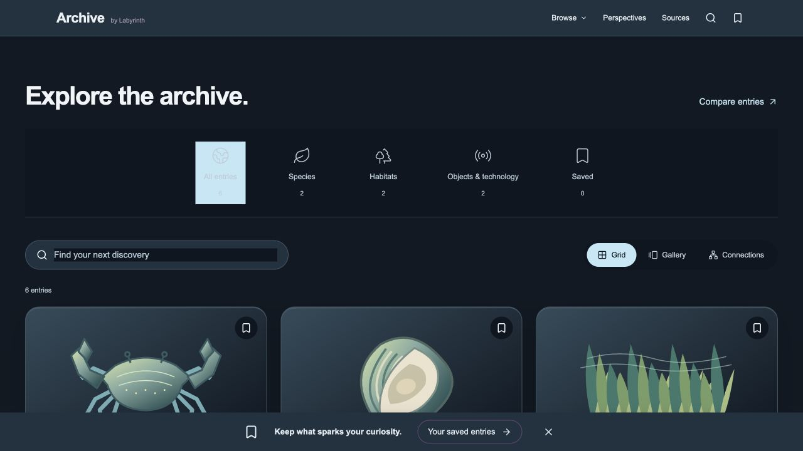
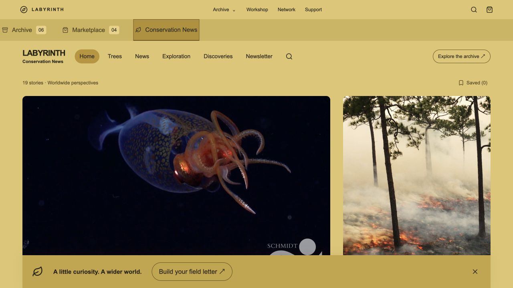

Archive
Sourced records, maps, and observations for tracking wildlife and habitats.

The Archive covers Chesapeake Bay blue crab and eastern oyster. It combines a searchable inventory with regional maps, measurements, histories, and news. The blue crab profile spans 13 sections with model viewers, related records, comparisons, and source references.
Features
The homepage connects an interactive globe, specimen galleries, and 3D scenes to Archive entries. Visitors can move from the regional map to a species profile and explore related material in grid, gallery, and Connections views.
Tools
React, TypeScript, and Vite power the interface. GitHub Actions runs scheduled data imports.
Data sources and validation
The Archive combines NOAA terrain and station readings with observations from Maryland DNR, VIMS, and NOAA. The pipeline checks dates, units, values, station identity, and survey qualifications. Station readings refresh on visits and every 15 minutes while the view is visible. Annual surveys retain their source dates, and failed updates preserve the last available observation with its original date.
Network
Community hub for sharing field observations and coordinating conservation work.

The Network organizes conversations around shared subjects from the Archive, such as a species, habitat, or restoration effort. Those subjects give people and organizations a common reference when they share observations or plan work.
Features
A feed for short field updates and photos, topic channels for ongoing discussions, and team chat for quick coordination. Relationship maps connect shared subjects with people, organizations, and Workshop investigations.
Tools
The Archive’s Connections view for browsing related records, a discussion editor with local drafts, and shared channels for coordinating fieldwork.
Workshop
A 3D workspace for investigating habitats and testing conservation strategies.

The Workshop brings together terrain, field maps, and Archive evidence. In the oyster reef restoration scenario, an overhead strategy view shows how the reef sits within the surrounding Chesapeake Bay wetlands.
Features
3D model inspection, terrain exploration, an investigation notebook, and scenario controls for adjusting conditions and comparing conservation strategies before fieldwork.
Tools
Archive 3D viewers for model inspection. The simulation design pairs GIS mapping and Blender assets with Unreal Engine for terrain and scenario playback.
Development history
The internship focused on one wildlife species, its habitat, and related assets. The project scope covered the Archive for records and observations, the Network for coordination, and the Workshop for investigating conditions and testing strategies.
-
Initial architecture and build
I built the Archive, 3D Map, and Marketplace views in React and TypeScript, with search, filtering, measurements, histories, and linked records. I tested the application with demonstration data and procedural terrain, then packaged it for GitHub Pages.

Early Labyrinth 3D Map -
Regionalization and data integration
I centered the platform on Chesapeake Bay blue crab and eastern oyster. I integrated NOAA terrain, mapping tools, and observations from Maryland DNR, VIMS, and NOAA. I added historical data, exports, source references, and quality flags, then linked ecological risks, news, and seasonal activity to records and maps.

Chesapeake Bay in the current Blue Crab Movement Atlas -
Archive article development
I expanded compact records into dark-themed articles with scientific profiles, detailed sections, source references, and interactive graphics. I added a contents panel and direct entry links while retaining measurements and ecological tools.

The blue crab article and its contents panel today -
Late September to early October 2026
Homepage development
I built the homepage with an interactive globe, specimen galleries, animated navigation, a reading calendar, and Field Explorer. I created a 3D journey with responsive controls and reworked the homepage map to link featured projects, especially blue crab, directly to their Archive entries.

The current homepage globe links Chesapeake Bay to the blue crab entry -
Entry collections and Archive redesign
I expanded the blue crab entry into 13 sections with embedded records, model viewers, media, comparisons, and source information. I redesigned Archive browsing with consistent cards, category navigation, Grid, Gallery, and Connections views, and quick-look panels. I took layout cues from Apple and Ecosia.

Current Archive collection and viewing modes -
Latest interface and scene refinements
I unified the Map, Marketplace, News, and entry layouts with shared styling, search, and saved-item controls. I improved collection browsing and evidence comparisons, refined the homepage portal, exhibits, particles, globe, and expedition carousel, and documented Blender inspections and where the assets came from.

Shared navigation in the current Conservation News view